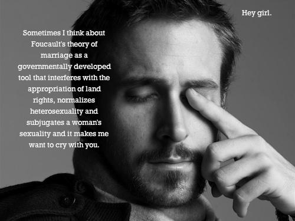

He's Literally Me: A Photobook and Anthology of Ryan Gosling and His Cult Following
Feminist Ryan Gosling from Drive (2011) (He's Literally Me)


Purchase Feminist Ryan Gosling: Feminist Theory (as Imagined) from Your Favorite Sensitive Movie Dude Here

Ryan Gosling Commando Cats in Disneyland (RyGos believes Disney raises armies of commando cats to combat mice problem. "The thing that’s so messed up about it … is that the whole empire of Disney is built on the back of one mouse" -RyGos on Conan)